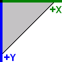
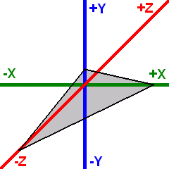

Terrain
The engine is able to render heightmap-based terrains with multiple blended surface textures and pre-calculated self-shadowing.
2D coordinates
Coordinate system directed right-downwards (as used in graphics files). The standard orientation is a view along the positive Y axis.
This is sometimes referred to as world coordinates in the source code.
| Positive X axis | Width of the terrain |
|---|---|
| Positive Y axis | Depth of the terrain |

3D coordinates
Left-handed coordinate system (as used by DirectX). The standard orientation is a view along the negative Z axis.
This is sometimes referred to as engine coordinates in the source code.
| Positive X axis | Width of the terrain |
|---|---|
| Positive Y axis | Height of the terrain |
| Negative Z axis | Depth of the terrain |
